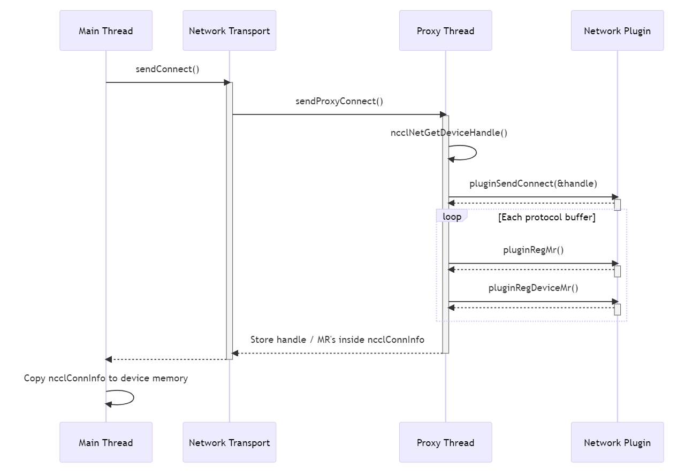

// Accept an optional ncclNetDeviceHandle_t object
// If *sendDevComm or *recvDevComm point to a valid object, then NCCL is requesting device offload for this connection
ncclResult_t (*connect)(int dev, void* handle, void** sendComm, ncclNetDeviceHandle_t** sendDevComm);
ncclResult_t (*accept)(void* listenComm, void** recvComm, ncclNetDeviceHandle_t** recvDevComm);
// Copy the given mhandle to a dptr in a format usable by this plugin's device code
ncclResult_t (*getDeviceMr)(void* comm, void* mhandle, void** dptr_mhandle);
// Notify the plugin that a recv has completed by the device
ncclResult_t (*irecvConsumed)(void* recvComm, int n, void* request);
typedef struct {
ncclNetDeviceType netDeviceType; // Network offload type
int netDeviceVersion; // Version number for network offload
void* handle;
size_t size;
int needsProxyProgress;
} ncclNetDeviceHandle_v7_t;
// This function embeds plugin-specific rules given the current versions
static ncclResult_t ncclNetGetDeviceHandle(ncclNetDeviceType type, int version, int p2p, bool isRecv, ncclNetDeviceHandle_t** handle) {
bool needsDeviceHandle = false;
if (type == NCCL_NET_DEVICE_UNPACK) {
if (version == NCCL_NET_DEVICE_UNPACK_VERSION && isRecv) {
needsDeviceHandle = true;
}
}
// Don't re-alloc netDeviceHandles
if (needsDeviceHandle && (*handle == NULL)) {
NCCLCHECK(ncclCalloc(handle, 1));
(*handle)->netDeviceType = type;
(*handle)->netDeviceVersion = version;
} else if (!needsDeviceHandle) {
*handle = NULL;
}
return ncclSuccess;
}

The ncclConnInfo structure now stores a deviceHandle like so:
struct ncclConnInfo {
...
struct ncclNetDeviceHandle_t netDeviceHandle;
};
void loadRecvConn(ncclDevChannelPeer *peer, int connIndex, struct ncclWorkElem* e) {
...
auto *conn = &peer->recv[connIndex];
if (conn->netDeviceHandle.netDeviceType == NCCL_NET_DEVICE_UNPACK) {
// handle must be a device ptr
netDeviceHandle = conn->netDeviceHandle.handle;
ncclNetDeviceUnpackSetup(netDeviceHandle, group, index);
...
}
Any relevant properties from the handle can be copied into ncclShmemData, which is a global shared memory data structure accessible to the NCCL kernel. This is going to be faster for frequently accessed fields within the plugin than going to global device memory. Currently, each type of device plugin is accessed within a union like so:
struct ncclShmemData {
...
alignas(16) union {
unpackShmem unpack;
myPluginShmem myPlugin;
...
} devicePlugin;
};
Additionally, any per-group storage is defined within a second union inside ncclShmemGroup, like so:
struct ncclShmemGroup {
...
union {
unpackGroupShmem unpack;
} devicePlugin;
};
The kernel then sets flags denoting that this particular plugin is active, and then proceeds as normal, calling into plugin-specific codepaths:
// Inside prims_simple genericOp(), on every iteration of data
if (flags & AnyNetDeviceUnpack) {
int mask = ncclShmem.groups[group].devicePlugin.unpack.unpackNetDeviceIndexMask;
while (mask != 0) {
int ix = __ffs(mask)-1; // Get the first set bit of the mask (this should correlate to a peer index)
mask &= mask-1; // Drop the first set bit of the mask
// Pack data from the internal iovec to the supplied flat srcs buffer using all the threads
// + Src is necessary in the case of accessing the user buffer directly
ncclNetDeviceUnpack(tid, nworkers, group /* in case they need to use split warps shared memory partitioning*/,
ix, ncclShmem.groups[group].srcs[ix + Src], workSize, ncclShmem.groups[group].devicePlugin.unpack.head);
}
}
ncclResult_t ncclNetCheckDeviceVersion(struct ncclComm* comm, ncclNet_t* net, int dev) {
ncclNetProperties_t props;
NCCLCHECK(net->getProperties(dev, &props));
ncclNetDeviceType type = props.netDeviceType;
if (type) switch (type) {
case NCCL_NET_DEVICE_UNPACK:
if (props.netDeviceVersion == NCCL_NET_DEVICE_UNPACK_VERSION) {
INFO(NCCL_INIT, "Using NCCL_NET_DEVICE_UNPACK net plugin version %d",
props.netDeviceVersion);
return ncclSuccess;
} else {
WARN("NCCL_DEVICE_UNPACK plugin has incompatible version %d, this NCCL build is compatible with %d, not using it",
props.netDeviceVersion, NCCL_NET_DEVICE_UNPACK_VERSION);
return ncclInternalError;
}
default:
WARN("Unknown device code index");
return ncclInternalError;
}
INFO(NCCL_INIT, "Using non-device net plugin version %d",
props.netDeviceVersion);
return ncclSuccess;
}
// sendProxyConnect()
...
// If the network plugin supports device-initiated communication, get the netDeviceHandle here
// netDeviceHandle->handle must be a device ptr!
if (resources->netDeviceType != NCCL_NET_DEVICE_HOST) {
NCCLCHECK(ncclCalloc(&connection->netDeviceHandle, 1));
NCCLCHECK(proxyState->ncclNet->getDeviceHandle(resources->netSendComm, resources->tpRemoteRank, connection->netDeviceHandle, &connection->needsProxyProgress));
} else {
connection->needsProxyProgress = 1;
}
// sendConnect(), after sendProxyConnect() has completed
...
if (send->proxyConn.connection->needsProxyProgress) {
send->proxyConn.proxyProgress = sendProxyProgress;
} else {
send->proxyConn.proxyProgress = NULL;
}
// Inside SaveProxy(), checking if proxyConn has proxyProgress defined before enqueueing a proxyOp if (connector->proxyConn.proxyProgress == NULL) return ncclSuccess;
// Inside proxyConnInit(), checking if *connection has needsProxyProgress set to 1 before starting the progress thread
(*connection)->tcomm = (*connection)->send ? &ncclTransports[(*connection)->transport]->send : &ncclTransports[(*connection)->transport]->recv;
// If we need proxy progress, let's allocate ops and start the thread
if ((*connection)->tcomm->proxyProgress && (*connection)->needsProxyProgress) {
NCCLCHECK(proxyProgressInit(proxyState));
...
}
The biggest drawback of the current implementation is the need to hardcode every case of each device plugin within the NCCL kernel. This results in an increase in kernel binary size as well as ever-increasing complexity of the kernel state machine. This is primarily because runtime loading of CUDA functions isn't officially supported nor is it performant, and therefore continues to be a non-viable option. In the future this may change. The upside is an ease of use by NCCL's customers - NCCL comes built with support for their plugin and repeatable high performance. In the future, I plan to implement a further abstraction layer between the core NCCL kernel and plugin functionality as a greater diversity of use cases present themseves.